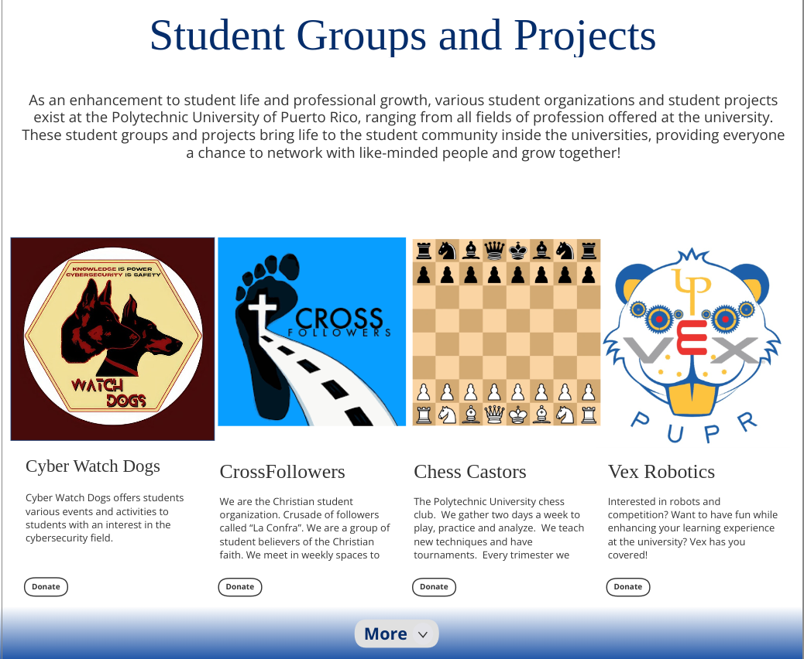

Capstone project for the Polytechnic University of Puero Rico. Re-work the donation page of the university to allow for more accurate donation transactions by enabling the user to decide where their contributions gets distributed. Also facilitates the donation process for the administrators by notifying when a donation is received and its purpose. Expected Completion: May, 2024
See My Work in More Detail
PUPR Donations Website Rework (In Development!)
Crane Army Armuniction Activity - MCRP Internship
In this project, I created a PowerBI data report for the logistics department for Crane Army Ammunition Activity. I had to work with diverse group of interns (since one of the goals of the intership was to introduce diversity into the workspace) and be proactive to keep up with data changes. I learned how to use some tools like PowerBI, Power Automate, and Power Query.
Dynamics Payments- Data Entry Internship
This was my first official job! I got to learn a lot about officially becoming a professional and learning about work life. In this this job, I had to handle sensitive user information such as bank accounts, IDs, and social security numbers. I leanred how to use Excel and working with a team.
Contact Me
You can contact me at jgonzalezggp@gmail.com
Or find me on my LinkedIn Page!